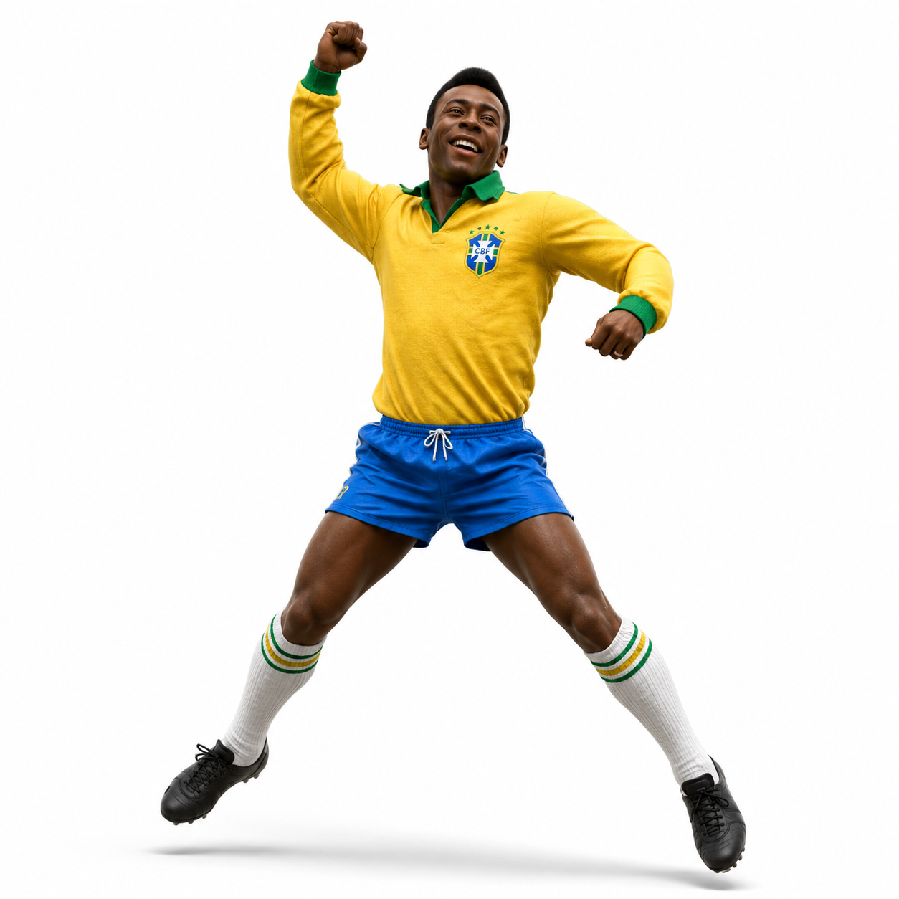
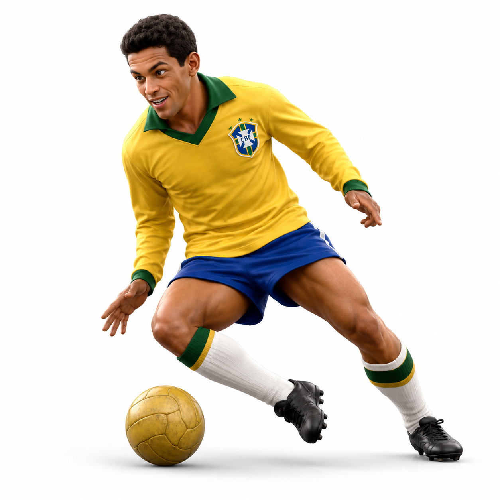
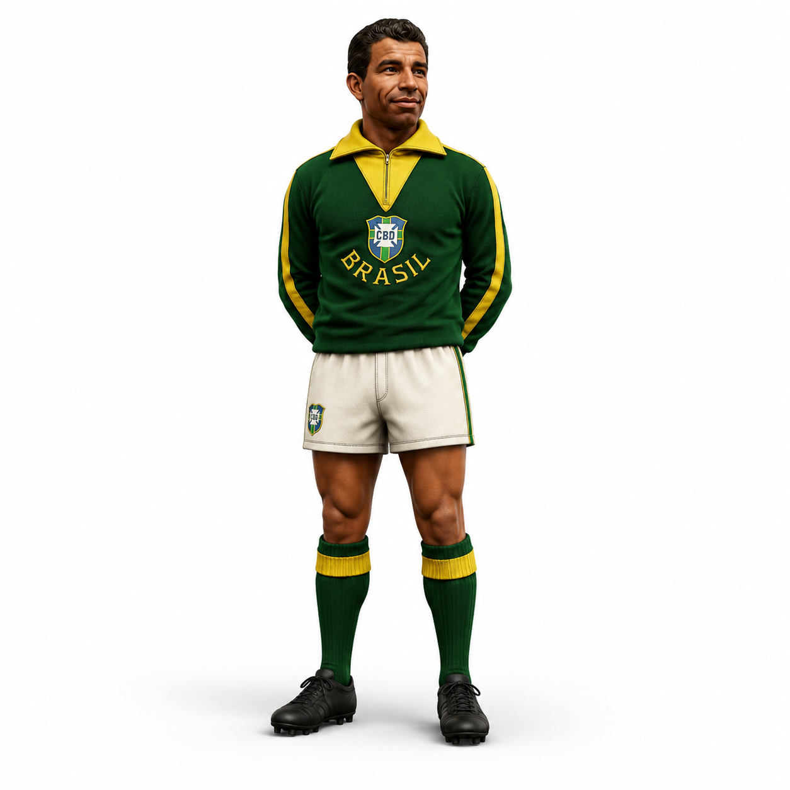
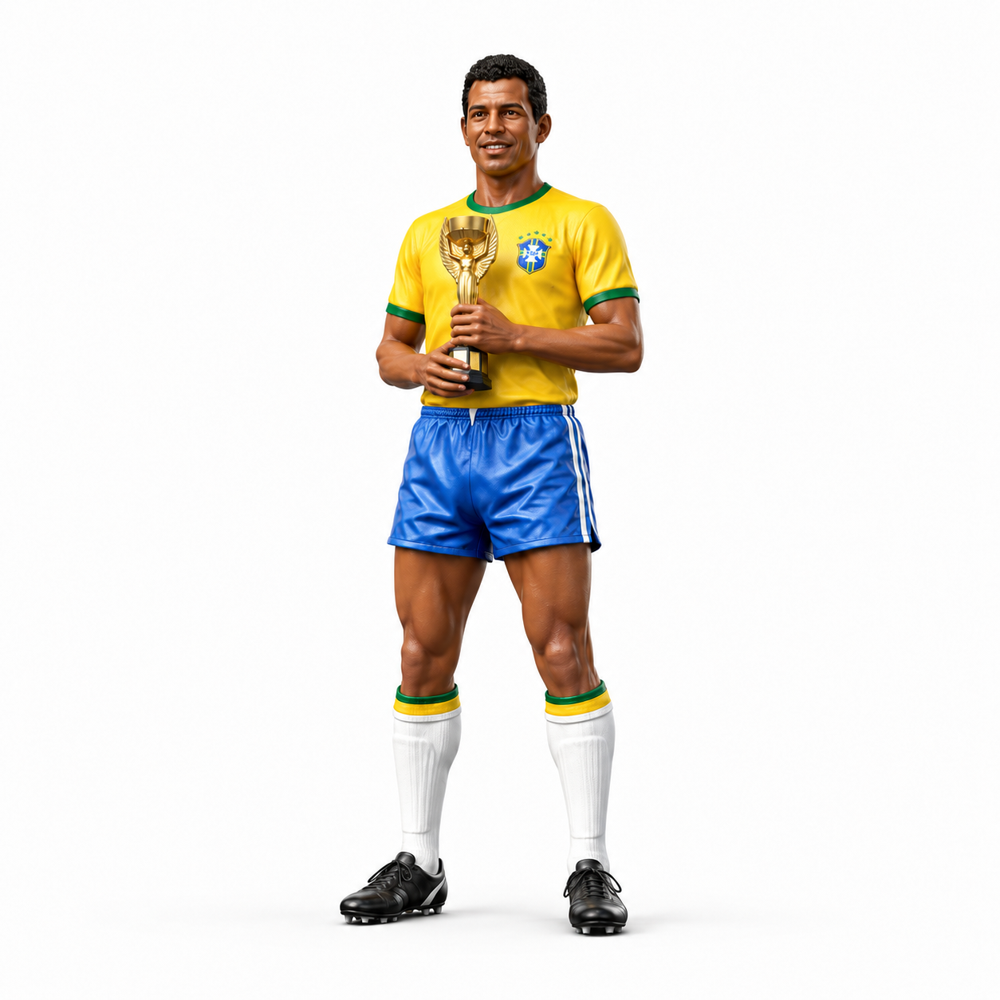
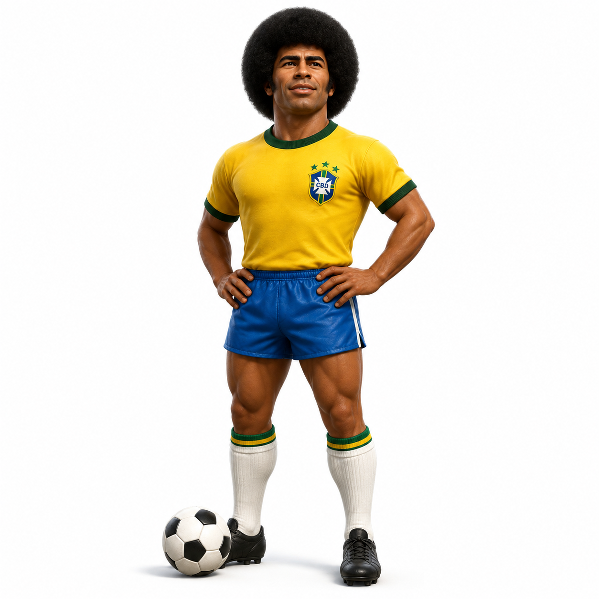
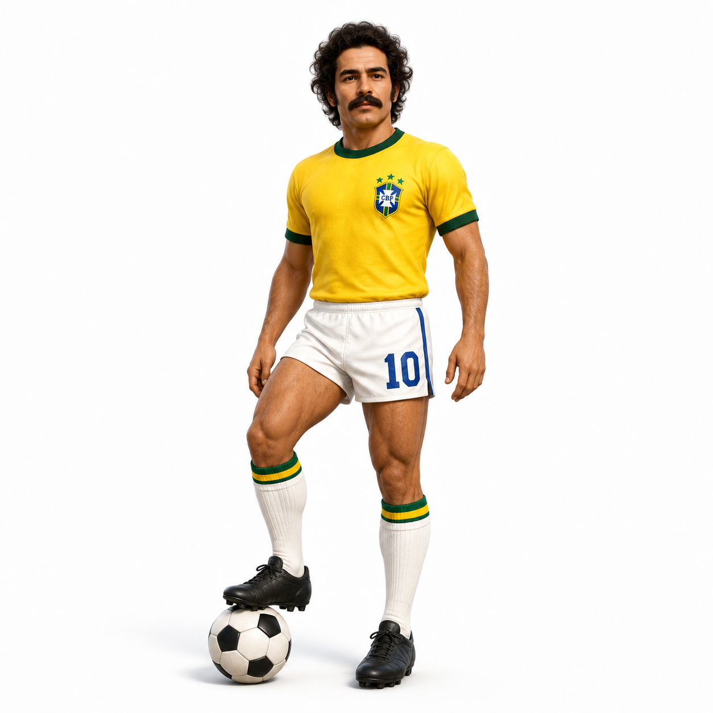
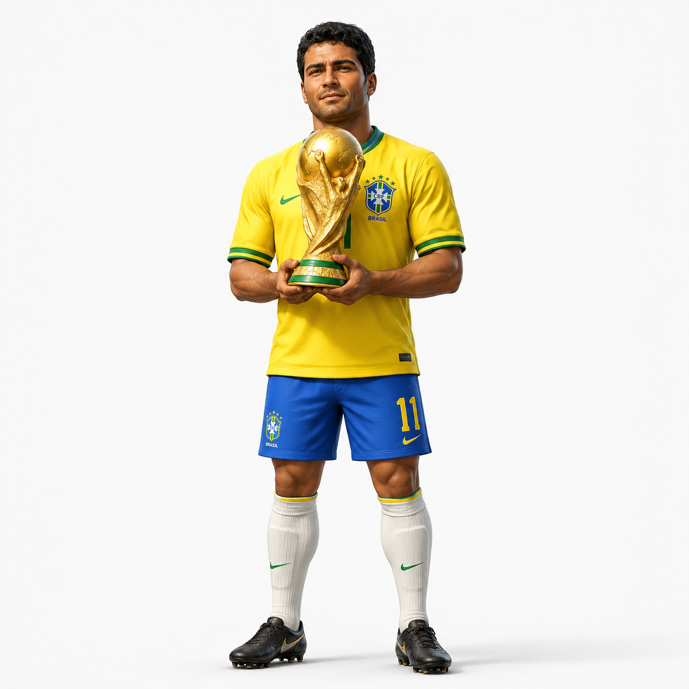
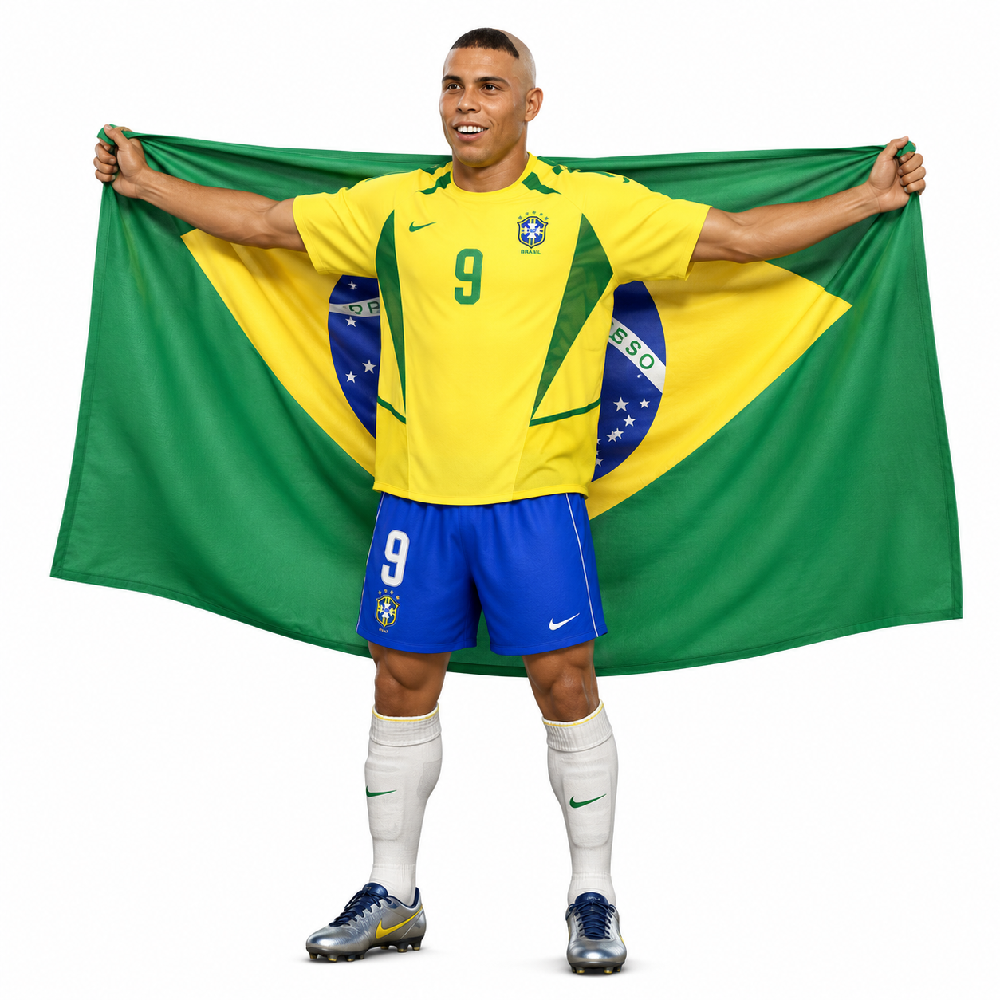
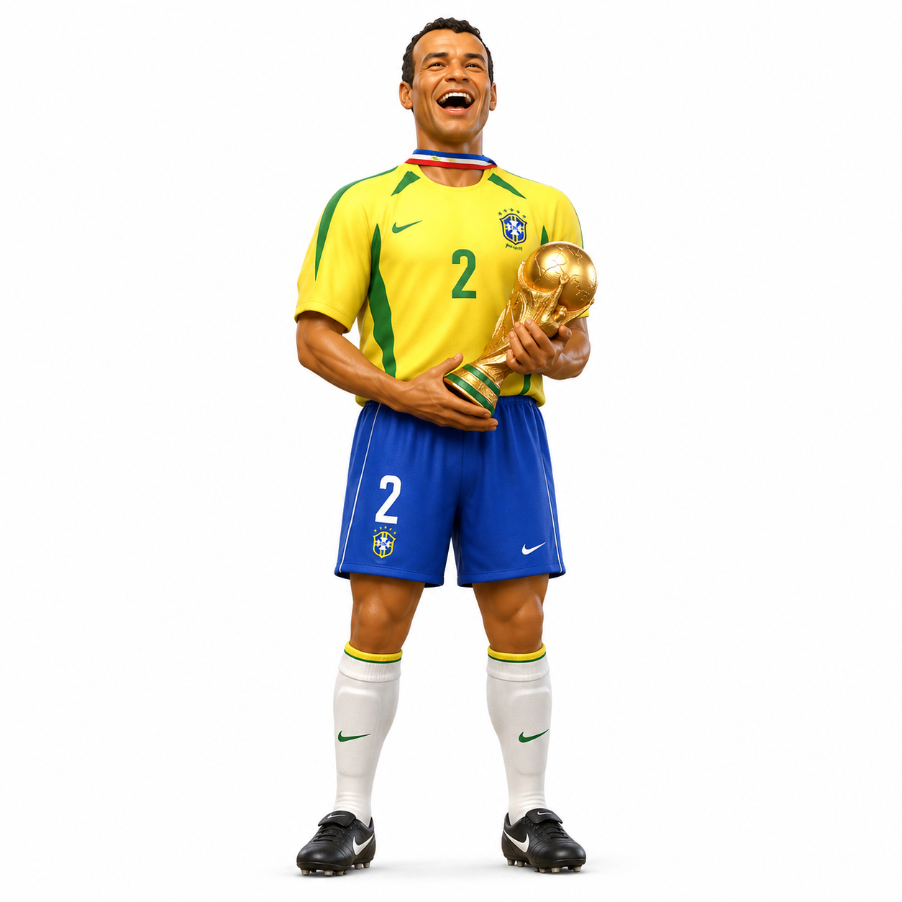

Os Craques que Fizeram História
Cada estrela conquistada pelo Brasil tem o nome de jogadores que marcaram época. Conheça alguns dos craques por trás dos cinco títulos.
Geração de 1958 e 1962

Pelé
O Rei do futebol. Único jogador a conquistar três Copas do Mundo (1958, 1962 e 1970). Marcou na final de 1958 com apenas 17 anos e é considerado por muitos o maior jogador da história.

Garrincha
Conhecido como "Anjo de Pernas Tortas", driblava adversários com uma facilidade única. Foi peça fundamental nos títulos de 1958 e 1962, sendo eleito o melhor jogador da Copa de 1962.

Vavá
Marcou gols nas finais de 1958 e 1962, repetindo o feito em duas decisões de Copa do Mundo - uma marca rara na história do futebol mundial.
Geração do Tricampeonato (1970)

Carlos Alberto Torres
Lateral-direito e capitão da seleção tricampeã, ficou eternizado por finalizar a jogada coletiva que resultou no quarto gol na final de 1970 contra a Itália, um dos gols mais bonitos da história das Copas.

Jairzinho
Ponta-direita conhecido como "Furacão", é o único jogador da história a marcar gols em todos os jogos de uma mesma Copa do Mundo, em 1970.

Rivelino
Meio-campista de chute potente e canhota privilegiada, foi peça-chave do time de 1970 e ajudou a popularizar o drible conhecido como "elástico".
Geração do Tetra e do Penta (1994 e 2002)

Romário
Artilheiro nato, formou com Bebeto uma das duplas de ataque mais eficientes do futebol brasileiro e foi fundamental na conquista do tetracampeonato em 1994.

Ronaldo Fenômeno
Artilheiro da Copa de 2002, viveu uma das maiores histórias de superação do futebol ao se recuperar de graves lesões para liderar o pentacampeonato brasileiro.

Cafu
Capitão da seleção pentacampeã em 2002, é o único jogador da história a disputar três finais consecutivas de Copa do Mundo (1994, 1998 e 2002).